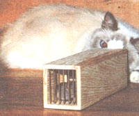
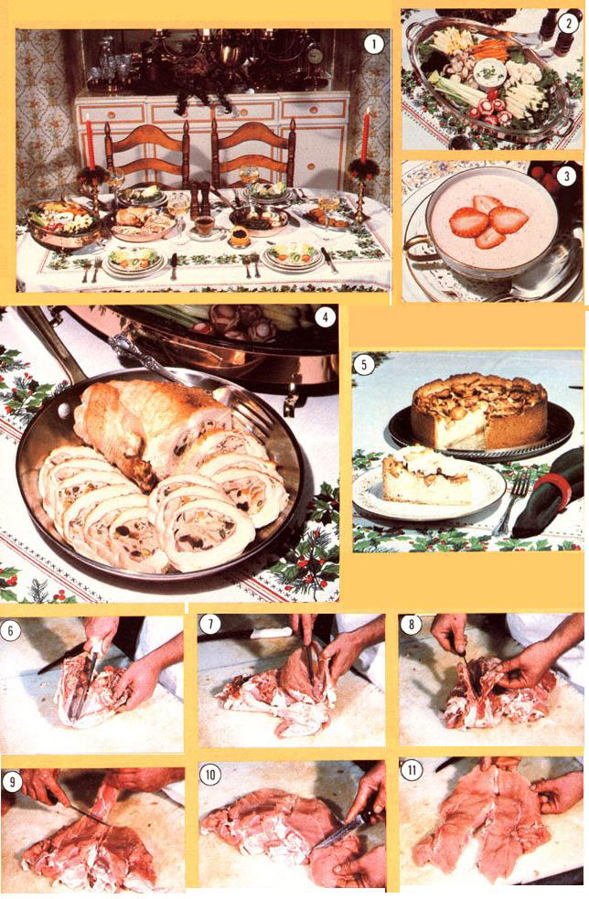
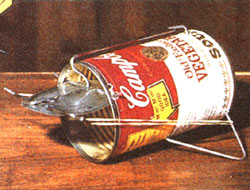

This "Old World" model is based on a Danish design . . and-although it fairly screams "Rube Goldberg"-it's functional (and even sort of fascinating).
To make it, you'll need an all-wire coat hanger . . . a strip of pine measuring 1/4" X 2-1/2" X 54" . . . another scrap of softwood with 3/4" X 1-1/4" X 4" dimensions . . . about two dozen 16-gauge, 5/8" wire brads . . . and a 3-penny finishing nail. The only tools required are a coping saw, a ruler, a hammer, a nail set, a pair of wire cutters, and a drill with an assortment of bits.
Begin by cutting up your 1/4" plank to produce the pieces called for in the illustration. Once you've done so, use a No. 48 bit to drill lines of holes-keeping the individual bores about 5/16" apart-with each series parallel to and 1/4 inch from one of the short ends of the 1/4" X 2-1/2" X 9-1/4" and the 1/4" X 1-1/2" X 2-1/8" X 5" panels . . . and drill yet another hole through each of the latter parts, at a point 1 inch from the straight edge and 3-1/4 inches from the wide end. (To keep the openings lined up, it's best to clamp the matching pairs of pieces together, then bore the necessary holes. Note, also, that the lines of openings in the ends of the two wedge-shaped panels don't extend all the way across the pieces, but terminate 1-1/4 inches down from the peaked corners.)
Next, clip apart your coat hanger to form bars of two different lengths. (You'll need six that are 1-7/8" long and seven that are 2-3/4" long.) With this done, tack the box together using some wire brads (make sure its walls are positioned between the top and bottom boards, and that the bar holes in the upper and lower panels are at the same end of the box), then tap the seven hanger rods into place. Complete the cage by drilling a 1l8" hole through the bottom board, being certain it's centered and 3/4 inch from the end opposite the bars.
To assemble the ramp mechanism, first tack the narrow ends of the wedge-shaped pieces to the sides of the softwood block (the lower edges of the 1/4" walls should be flush with the bottom of the 3/4" X 1-1/4" X 4" plug, and the joint should be 1-3/4" long), then tap five more bars into the aligned openings. Also, make a security pin by cutting a 3/4" piece from the finishing nail and driving it into the bottom of the softwood block at a point 1 inch from its inside edge.
Finally, trim one end of the remaining 1/4" X 1-1/4" X 6-1/4" wooden slab to a 45° angle, then drill a 3/32" hole through its width-as shown-2-3/4 inches from the angled tip. Secure the piece between the walls of its housing by running the last 1-7/8" hanger rod through the side sections and the bore in the ramp.
To use the trap, just set some bait inside the box, near the bars, and place the ramp assembly-grille first-into the tunnel's open end till the finishing nail falls into the locking hole. Your "prey" will enter the opening at the end of the trap, and its weight will cause the ramp to fall . . . allowing the critter to get at the eats. But once the mouse steps off the ramp, that offset part will fall back into place, thus blocking the rodent's only route to freedom.
This tin-can calaboose is so basic that some folks say the only reason it catches mice is that the critters can't believe it actually works. If you'd like to try it out, simply find yourself a wire coat hanger, a soup can (with a lid), and two thin rubber bands. Then, using a 1/8" bit, drill holes into the tin and the disk at the places indicated in the drawing (there'll be a dozen, all told).
Next, cut your coat hanger to form five rods of the following lengths: one 3", two 4", one 6", and the last 9" . . . and then-using a pair of needle-nosed pliers-start to bend the wire sections to the shapes illustrated. (The best way to do this is to form the rods to near completion, but in each case leave a straight section so you can slip them into their respective openings ... then finish the bending process once they're in the holes.) Rubber bands, stretched between the hooks on the door and the back of the legs, snap the cover shut when the latch is released.
The gizmo is set by first wrapping your bait around the "crank" of the catch rod, then securing the door's latch arm under the catch's elbowed tip. When the tiny pest tugs at its dinner, the lid "pulls to" . . . and the mouse will be securely canned until you're ready to grant a reprieve.
|
 |
 |
 |
|
|
|
|